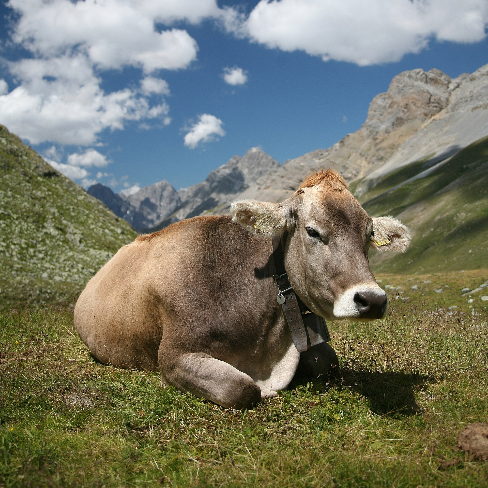

Warp Image - JS version
Step 1: Drag an image (from below or from disk) to the right.

Step 2: Add at least 3 points and drag.
Ctrl+Click
Add control point.
Shift+Click
Remove control point.
Drag
Warp.
Transformation:
Show Grid
Show Control Points